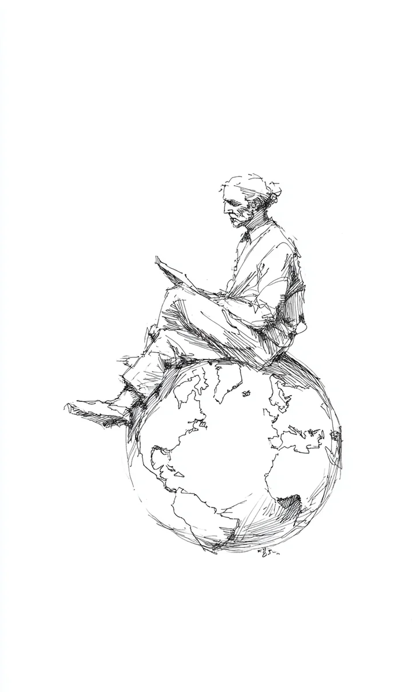

지구 위에 할아버지가 앉아 있어요.
[An old man sits on top of the Earth.]
두꺼운 책을 읽어요.
[He reads a thick book.]
책이 아주 무거워요.
[The book is very heavy.]
책에는 사람들의 편지가 가득해요.
[The book is full of letters from people.]
할아버지가 한 장을 읽어요.
[The old man reads one page.]
“하느님, 비가 너무 많이 와요!”
[”God, it rains too much!”]
다음 장을 읽어요.
[He reads the next page.]
“하느님, 비가 안 와요!”
[”God, it doesn’t rain!”]
할아버지가 한숨을 쉬어요.
[The old man sighs.]
또 다음 장.
[Another page.]
“제 라면이 너무 매워요.”
[”My ramen is too spicy.”]
“제 버스가 너무 느려요.”
[”My bus is too slow.”]
“제 남자친구가 저를 안 사랑해요.”
[”My boyfriend doesn’t love me.”]
“우리 강아지가 제 신발을 먹었어요.”
[”Our dog ate my shoe.”]
할아버지가 머리를 긁어요.
[The old man scratches his head.]
“사람들은 정말 이상해요.”
[”People are really strange.”]
그때 작은 목소리가 들려요.
[Then a small voice is heard.]
“하느님, 월요일이 너무 빨리 와요!”
[”God, Monday comes too fast!”]
“하느님, 금요일이 너무 늦게 와요!”
[”God, Friday comes too slow!”]
할아버지가 웃어요.
[The old man laughs.]
“월요일을 없애 볼까?”
[”Should I get rid of Monday?”]
할아버지가 펜을 찾아요.
[The old man looks for a pen.]
그런데 펜이 없어요.
[But there is no pen.]
은퇴한 후에 펜을 다 버렸어요.
[After he retired, he threw away all the pens.]
“맞다. 나는 은퇴했지.”
[”Right. I am retired.”]
하늘에서 비둘기가 새 편지를 가져와요.
[From the sky a pigeon brings a new letter.]
“하느님, 제 비둘기가 제 빵을 먹었어요!”
[”God, my pigeon ate my bread!”]
할아버지가 비둘기를 봐요.
[The old man looks at the pigeon.]
비둘기도 할아버지를 봐요.
[The pigeon also looks at the old man.]
“미안해요.” 비둘기가 말해요.
[”I’m sorry,” the pigeon says.]
“저는 그냥 우체부예요.”
[”I’m just the mailman.”]
할아버지가 하늘을 봐요.
[The old man looks at the sky.]
“다음 하느님은 누가 할래요?”
[”Who wants to be the next God?”]
아무도 손을 안 들어요.
[Nobody raises their hand.]
할아버지가 다시 책을 펴요.
[The old man opens the book again.]
아직 천만 페이지가 남았어요.
[Ten million pages still remain.]